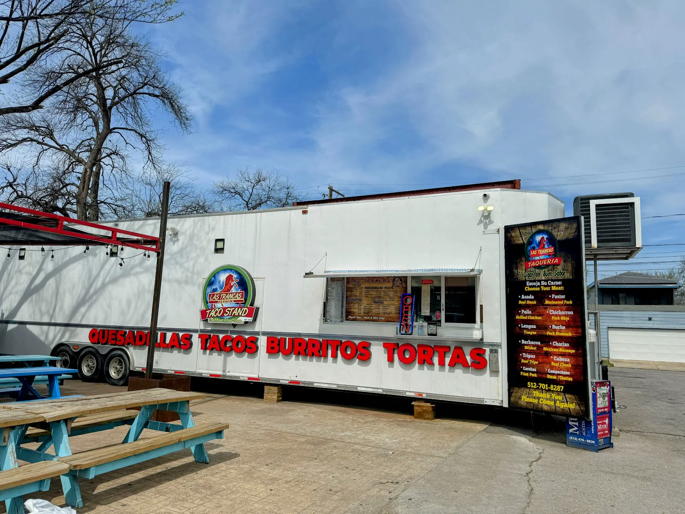
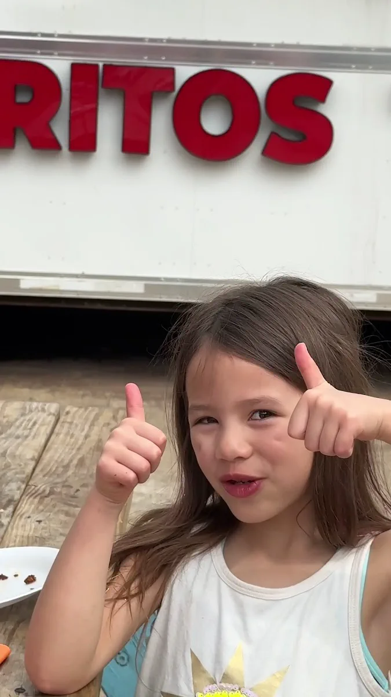
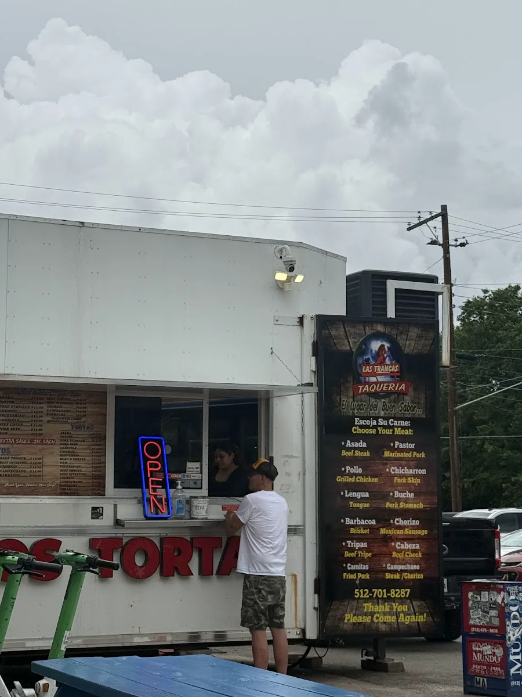
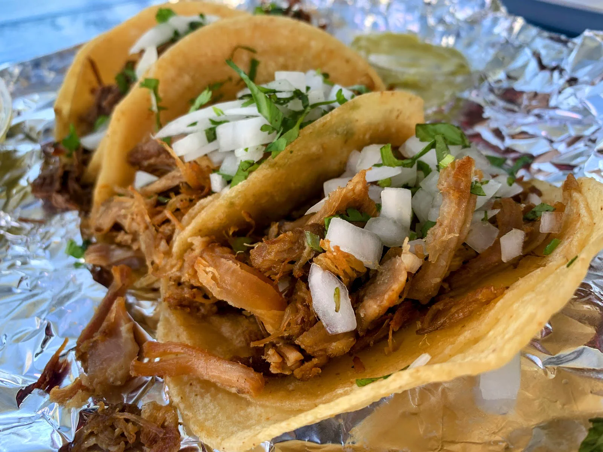
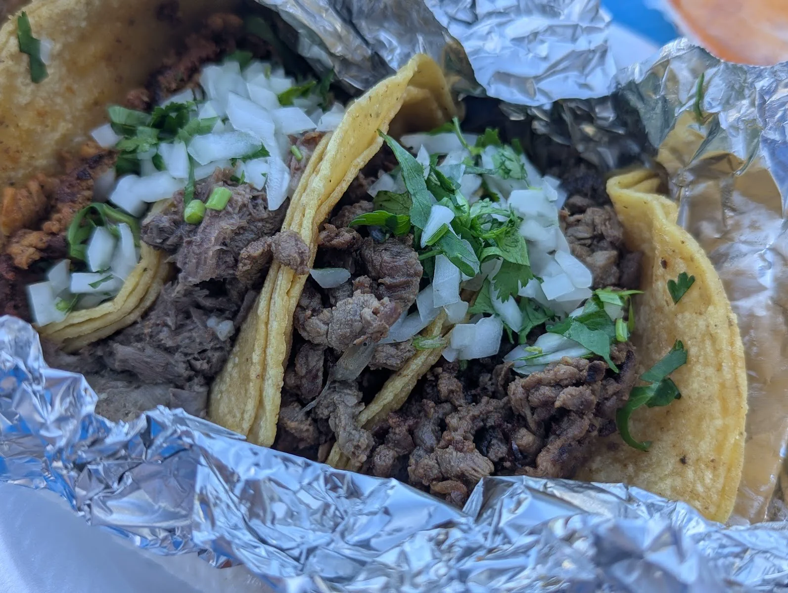

Taco restaurant · Austin, TX
Taco restaurant in Austin our customers trust
Call us · (512) 701-8287Las Trancas Taco Stand is a taco restaurant in Austin. The reviews below come straight from our customers on Google.




Straight from our Google reviews.
Las Trancas is everything I need and want from a taco truck. Efficient service, didn’t have to wait long for our order. Plenty of seating and lighting if you’re going for late night munchies. Easy to find parking in the lot or on the side street. Tacos are super flavourful, meat is tender, good portions overall. Tried the flour and corn tortillas and both are great. They fry the corn tortillas a bit. Flour tortillas are soft and chewy. Favourites: Lengua and tripa. Wow I wish I could take that lengua home with me. It was so supple and buttery. Don’t tell my mom, but I think it’s softer than the one she makes. Tripa is crispy. Love the contrast of textures between the two. Barbacoa was good, but not a standout. Brisket was a tad on the dry side. Maybe it was the time of night since we’ve only gone after 10pm. They provide two types of salsas, lime, and packaged salt with the tacos. Didn’t need the salt personally. Lime and mild salsa (red) was lovely. The other salsa was proper spicy 🌶️ Spent $22 after tip for 6 tacos. We came back for more a different night and food quality was consistent. Will definitely make a stop here again next time I’m in Austin.
My favorite with D10 while we were in Austin. What sets Las Trancas apart is the depth of choice for tacos. Lengua & tripe tacos are seldom on any menus out there. Try these uncommon flavours, they are worth seeking. Tripe is an acquired taste because of the soft texture, but lengua was very flavourful. In the end, it was actually the chicharron that won our hearts, really good and flavourful, authentic taste. Service was impersonal, fast-food style, not the highlight of the visit. Vast area of picnic tables to sit outside and eat your order. Highly recommended. P.S.: if this review was useful, please leave a 👍, thank you for your support
⭐️⭐️⭐️⭐️⭐️ Las Taco Stand is hands down one of the best spots I’ve eaten at in a long time! The tacos are packed with flavor, made fresh, and loaded just right. You can really taste the quality in every bite. The service is fast and super friendly, and the prices are more than fair for the portion sizes. Whether you’re grabbing a quick bite or bringing friends along, this place never disappoints. Definitely a 5-star experience—I’ll be coming back again and again! 🌮🔥
Hello there, everything was yummy!!!!! At the time they did not have them jalapeños but shoot the salsa and tacos sure were deli!!!!! The parking was kinda silly but overall I highly recommend this joint....hopefully next time I visit there they have the jalapeño torriarros....... will definitely be going back.... so yummy!!!! The girl at the window was very nice and courteous...... that was a big plus.....🙏